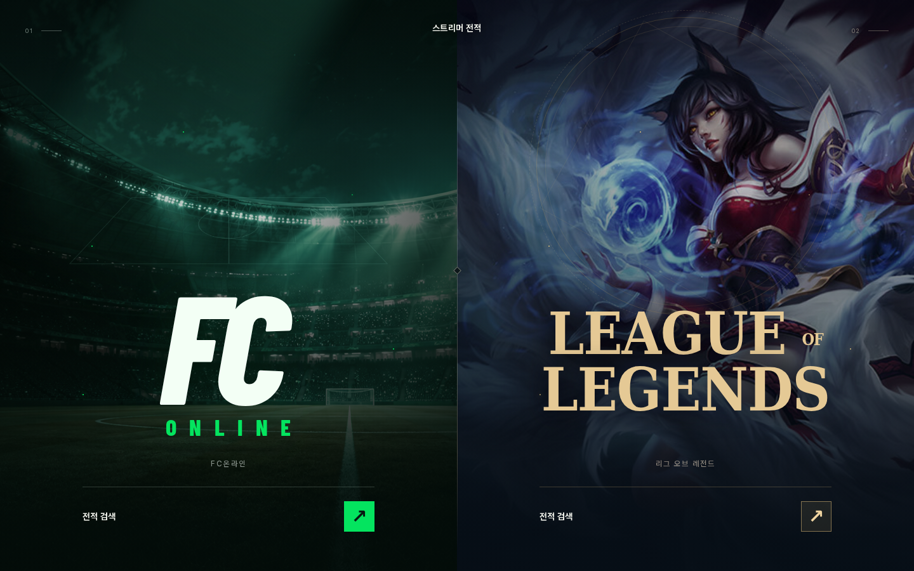
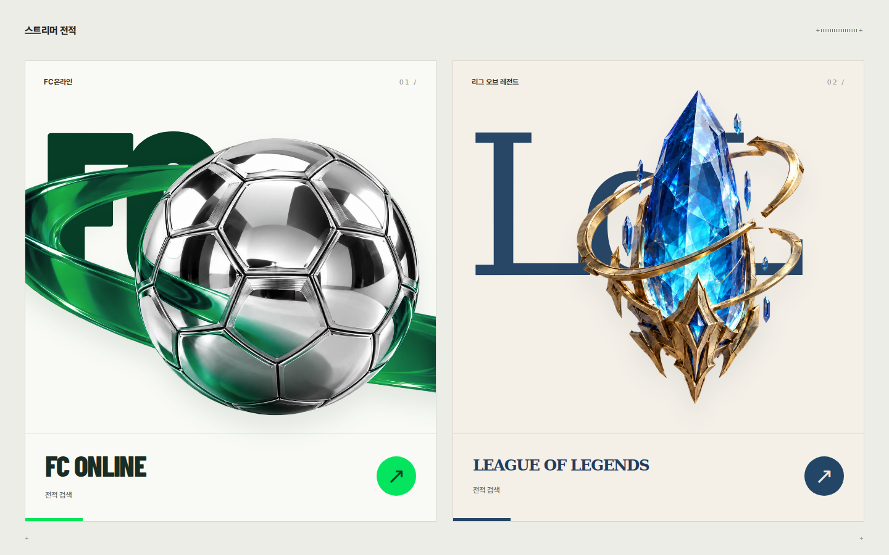
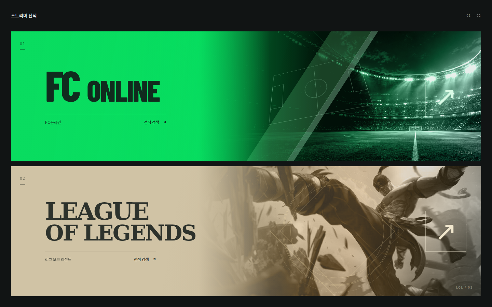

ATWO WORLDS

두 개의 세계 ↗
경기장의 조명과 아리의 푸른 마법.
화면 전체가 두 개의 입구가 됩니다.
전체 화면시네마틱빛 · 입자
BART OBJECTS

오브제 포스터 ↗
크롬 축구공과 푸른 수정.
입체 오브제와 큰 글자를 겹친 두 장의 포스터.
밝은 바탕3D 오브제포스터
CGAME INDEX

게임 인덱스 ↗
FC 그린과 샌드 골드의 선명한 대비.
넓은 가로형 버튼을 위아래로 배치했습니다.
가로형 구성대형 타이포강한 대비